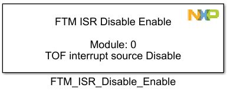
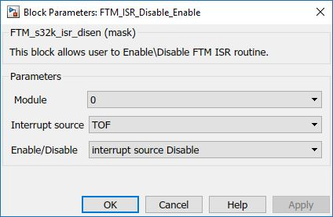

FTM ISR Enable Disable Block
The main functionality of the block is to allow the user to Enable/Disable FTM Timer Overflow and Channel ISRs.
Block Image
Inputs:
- None
Outputs:
- None
Parameters and Dialog Box
Module
Select which FTM module to use.
- Range varies depending on the selected MCU in the main config block.
Interrupt Source
Select interrupt source
- TOF
- Channel 0-7
Enable/Disable
Block Dependency
- None
Block Miscellaneous Details
- None